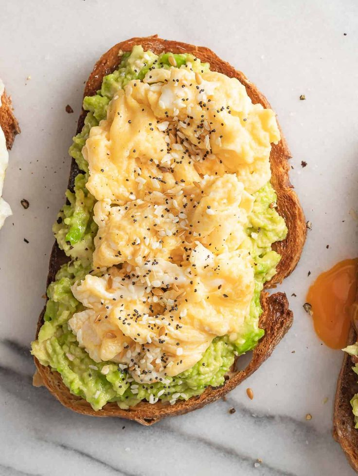

Avo-Eggs

Description
Indulge in a delightful breakfast or brunch with this simple yet satisfying recipe for scrambled eggs and avocado on toast.
Perfect for busy mornings or lazy weekends, this dish combines creamy avocado, fluffy scrambled eggs,
and toasted bread for a delicious and nutritious meal that will leave you feeling energized and ready to tackle the day.
Ingredients
- 2 large eggs
- 1 ripe avocado
- 2 slices of bread (your choice of whole wheat, sourdough, or any preferred bread)
- Salt and pepper to taste
- Optional: a dash of hot sauce or chopped fresh herbs for extra flavor
Steps
- Start by toasting the bread until it reaches your desired level of crispiness. Set aside once toasted.
- While the bread is toasting, crack the eggs into a bowl and whisk them together until well combined.
Season with a pinch of salt and pepper to taste.
- Heat a non-stick skillet over medium heat and lightly coat it with cooking spray or a small amount of oil.
- Pour the whisked eggs into the skillet, stirring gently with a spatula as they cook.
Continue to stir occasionally until the eggs are scrambled and cooked to your liking, usually about 2-3 minutes.
- While the eggs are cooking, halve the avocado, remove the pit, and scoop the flesh into a bowl.
Mash the avocado with a fork until smooth or leave it slightly chunky if desired. Season with a pinch of salt and pepper.
- Once the eggs are cooked, remove them from the heat and set aside.
- Take the toasted bread slices and spread the mashed avocado evenly over each slice.
- Spoon the scrambled eggs on top of the avocado-covered toast.
- If desired, garnish with a dash of hot sauce or chopped fresh herbs for an extra kick of flavor.
- Serve immediately and enjoy your delicious scrambled eggs and avocado on toast!
This recipe serves 1-2 people, depending on appetite, and can be easily customized with additional toppings
such as sliced tomatoes, crumbled feta cheese, or crispy bacon for extra indulgence.